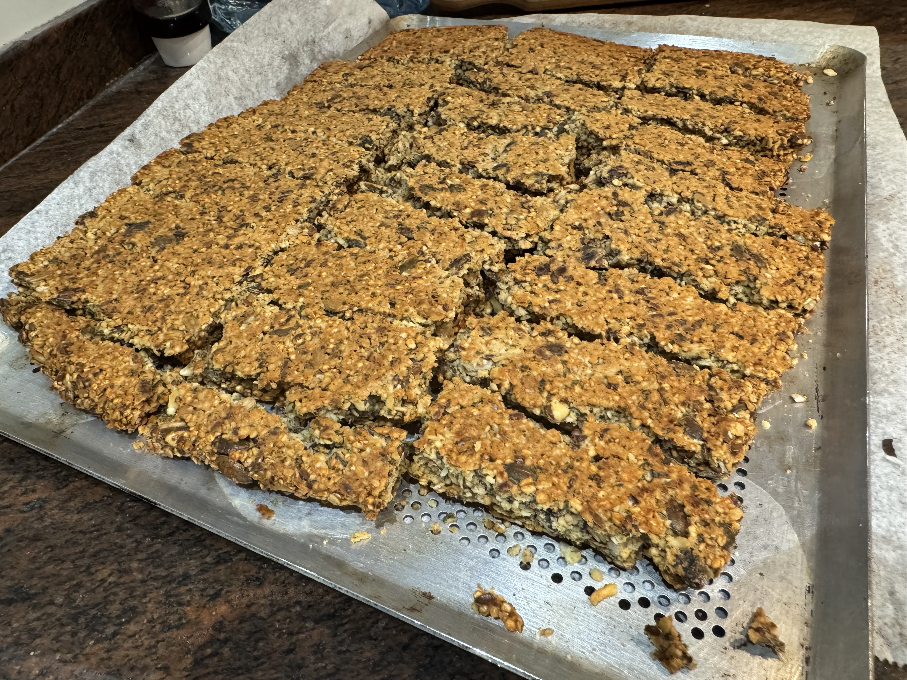

Barres aux dattes
Ingrédients
×
- 200 g de flocons d'avoine
- 150 g de courge
- 80 ml d'huile de coco
- 80 ml de tahin
- 125 ml de sirop d'érable
- 1 c. à c. de vanille
- 3 blancs d'oeufs
- 30 g de graines de tournesol
- 4 c. à s. de graines de lin
- 4 c. à s. de graines de chanvre
- 2 c. à s. de sésame
- 50 g de coco râpée
- 10 dattes medjool
- 0.5 c. à c. de sel
- chocolat noir

Préparation
Étape 1
Mélanger 200 g de flocons d'avoine, 150 g de courge, 80 ml d'huile de coco, 80 ml de tahin, 125 ml de sirop d'érable, 1 c. à c. de vanille, 3 blancs d'oeufs, 30 g de graines de tournesol, 4 c. à s. de graines de lin, 4 c. à s. de graines de chanvre, 2 c. à s. de sésame, 50 g de coco râpée, 10 dattes medjool et 0.5 c. à c. de sel.

Étape 2
Enfourner à 150ºC pendant 40min.

Étape 3
Laisser refroidir, puis former les barres.
Étape 4
Remettre au four 20min.
Étape 5
Napper de chocolat noir fondu avec un peu d’huile de coco.
Résumé
200 g de flocons d'avoine
150 g de courge
80 ml d'huile de coco
80 ml de tahin
125 ml de sirop d'érable
1 c. à c. de vanille
3 blancs d'oeufs
30 g de graines de tournesol
4 c. à s. de graines de lin
4 c. à s. de graines de chanvre
2 c. à s. de sésame
50 g de coco râpée
10 dattes medjool
0.5 c. à c. de sel
Mélanger
Enfourner 150ºC
former
Remettre au four
chocolat noir
Napper